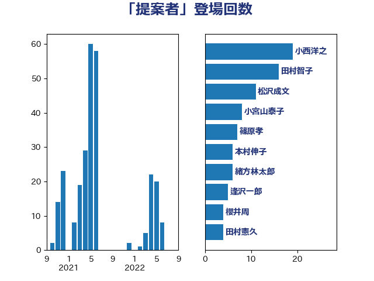

単語「提案者」

| 小西洋之 | 立憲民主党 | 19 回 |
| 田村智子 | 日本共産党 | 16 回 |
| 松沢成文 | 日本維新の会 | 11 回 |
| 小宮山泰子 | 立憲民主党 | 8 回 |
| 篠原孝 | 立憲民主党 | 7 回 |
| 本村伸子 | 日本共産党 | 6 回 |
| 緒方林太郎 | 無所属 | 6 回 |
| 逢沢一郎 | 自由民主党 | 5 回 |
| 櫻井周 | 立憲民主党 | 4 回 |
| 田村憲久 | 自由民主党 | 4 回 |
| 矢倉克夫 | 公明党 | 4 回 |
| 石井正弘 | 自由民主党 | 4 回 |
| 青木愛 | 立憲民主党 | 4 回 |
| 井上哲士 | 日本共産党 | 3 回 |
| 吉良よし子 | 日本共産党 | 3 回 |
| 奥野総一郎 | 立憲民主党 | 3 回 |
| 宮本徹 | 日本共産党 | 3 回 |
| 山岸一生 | 立憲民主党 | 3 回 |
| 市村浩一郎 | 日本維新の会 | 3 回 |
| 石井準一 | 自由民主党 | 3 回 |
| 紙智子 | 日本共産党 | 3 回 |
| 西村智奈美 | 立憲民主党 | 3 回 |
| 伊藤岳 | 日本共産党 | 2 回 |
| 佐藤茂樹 | 公明党 | 2 回 |
| 倉林明子 | 日本共産党 | 2 回 |
| 大串博志 | 立憲民主党 | 2 回 |
| 山田宏 | 自由民主党 | 2 回 |
| 木原稔 | 自由民主党 | 2 回 |
| 杉尾秀哉 | 立憲民主党 | 2 回 |
| 森屋宏 | 自由民主党 | 2 回 |
| 河西宏一 | 公明党 | 2 回 |
| 津島淳 | 自由民主党 | 2 回 |
| 浮島智子 | 公明党 | 2 回 |
| 渡辺周 | 立憲民主党 | 2 回 |
| 田村貴昭 | 日本共産党 | 2 回 |
| 稲富修二 | 立憲民主党 | 2 回 |
| 自見はなこ | 自由民主党 | 2 回 |
| 高橋千鶴子 | 日本共産党 | 2 回 |
| 高橋英明 | 日本維新の会 | 2 回 |
| 上川陽子 | 自由民主党 | 1 回 |
| 中川正春 | 立憲民主党 | 1 回 |
| 中野洋昌 | 公明党 | 1 回 |
| 井坂信彦 | 立憲民主党 | 1 回 |
| 伊東良孝 | 自由民主党 | 1 回 |
| 和田政宗 | 自由民主党 | 1 回 |
| 大口善徳 | 公明党 | 1 回 |
| 宮路拓馬 | 自由民主党 | 1 回 |
| 小沼巧 | 立憲民主党 | 1 回 |
| 山下芳生 | 日本共産党 | 1 回 |
| 岩渕友 | 日本共産党 | 1 回 |
| 木原誠二 | 自由民主党 | 1 回 |
| 枝野幸男 | 立憲民主党 | 1 回 |
| 橋本岳 | 自由民主党 | 1 回 |
| 橘慶一郎 | 自由民主党 | 1 回 |
| 武部新 | 自由民主党 | 1 回 |
| 池田佳隆 | 自由民主党 | 1 回 |
| 沢田良 | 日本維新の会 | 1 回 |
| 田島麻衣子 | 立憲民主党 | 1 回 |
| 石川大我 | 立憲民主党 | 1 回 |
| 舩後靖彦 | れいわ新選組 | 1 回 |
| 船田元 | 自由民主党 | 1 回 |
| 赤嶺政賢 | 日本共産党 | 1 回 |
| 足立康史 | 日本維新の会 | 1 回 |
| 近藤昭一 | 立憲民主党 | 1 回 |
| 遠藤利明 | 自由民主党 | 1 回 |
| 鈴木英敬 | 自由民主党 | 1 回 |
| 鈴木隼人 | 自由民主党 | 1 回 |